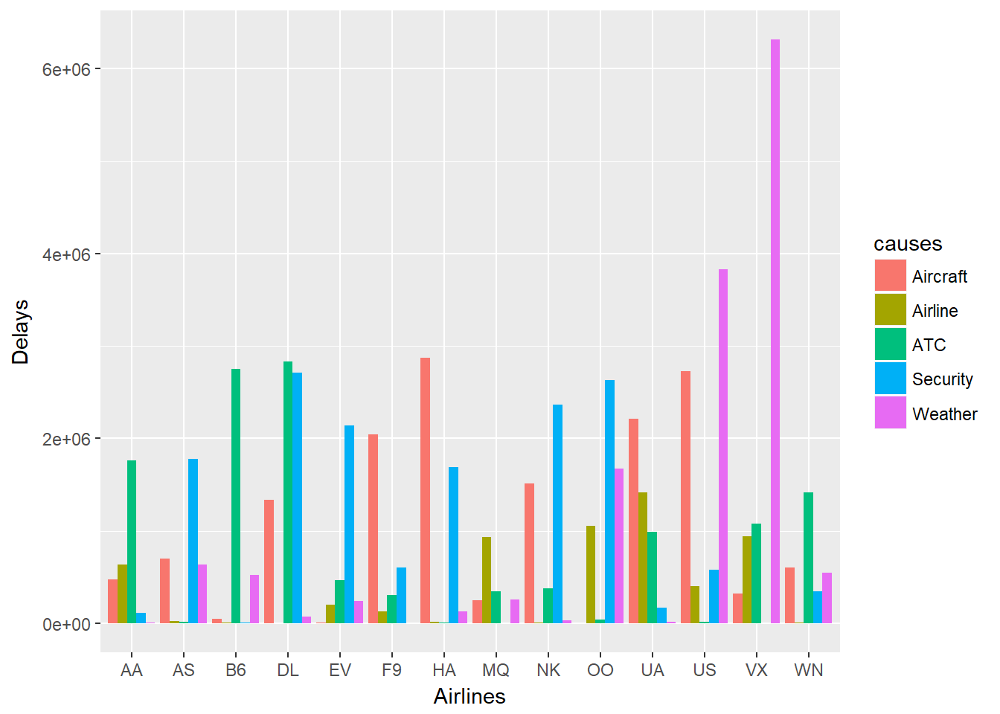

airlines <- read.csv('../airlines.csv', header=TRUE)
airports <- read.csv('../airports.csv', header=TRUE)
#flights <- read.csv('../flights.csv', header=TRUE)
#plot 1
aps <- as.character(levels(factor(unlist(flights$ORIGIN_AIRPORT[nchar(as.character(flights$ORIGIN_AIRPORT))==3]))))
n_aps <- length(aps)
ap_delays <- vector(length = n_aps)
for(i in 1:n_aps){
ap_delays[i] <- sum(flights$DEPARTURE_DELAY[ flights$ORIGIN_AIRPORT==aps[i] & flights$DEPARTURE_DELAY > 0], na.rm=TRUE)
}
library(maps)
map("state")
#normalization
psize<- (ap_delays - min(ap_delays))*5/(max(ap_delays) - min(ap_delays))+0.5
points(airports$LONGITUDE, airports$LATITUDE, col="black", pch = 21, cex=psize, bg="red")facts <- factor(rep(c("ATC","Security","Airline","Aircraft","Weather"),each = 14))
ls <- vector(length=70)
i <- 1
als <- levels(dds$AIRLINE)
for(al in als){
ls[i] <- sum(dds[[27]][ dds$AIRLINE == al ])
ls[i+1] <- sum(dds[[28]][ dds$AIRLINE == al ])
ls[i+2] <- sum(dds[[29]][ dds$AIRLINE == al ])
ls[i+3] <- sum(dds[[30]][ dds$AIRLINE == al ])
ls[i+4] <- sum(dds[[31]][ dds$AIRLINE == al ])
i<-i+5
}
ls1<- (ls - min(ls))*100/(max(ls) - min(ls))+1
dat1 <- data.frame(
causes = facts,
Airlines = rep(als,5), levels=als,
Delays = ls
)
ggplot(data=dat1, aes(x=Airlines, y=Delays, fill=causes)) +
geom_bar(stat="identity", position=position_dodge())